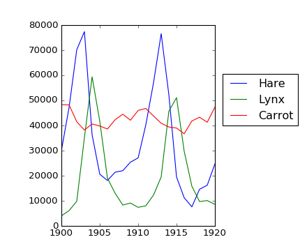
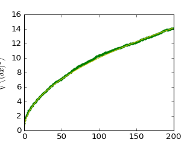
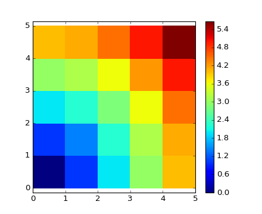

1.3.8. 数组的数值运算¶
Section contents
1.3.8.1. 元素智能(elementwise)运算¶
1.3.8.1.1. 基本运算¶
（数组）与标量：
>>> a = np.array([1, 2, 3, 4])
>>> a + 1
array([2, 3, 4, 5])
>>> 2**a
array([ 2, 4, 8, 16])
所有运算符都是元素智能的：
>>> b = np.ones(4) + 1
>>> a - b
array([-1., 0., 1., 2.])
>>> a * b
array([ 2., 4., 6., 8.])
>>> j = np.arange(5)
>>> 2**(j + 1) - j
array([ 2, 3, 6, 13, 28])
并且NumPy比纯Python的计算速度快多了：
>>> a = np.arange(10000)
>>> %timeit a + 1
10000 loops, best of 3: 24.3 us per loop
>>> l = range(10000)
>>> %timeit [i+1 for i in l]
1000 loops, best of 3: 861 us per loop
警告
数组乘法并非矩阵乘法：
>>> c = np.ones((3, 3))
>>> c * c # 不是矩阵乘法！
array([[ 1., 1., 1.],
[ 1., 1., 1.],
[ 1., 1., 1.]])
注解
矩阵乘法的实现：
>>> c.dot(c)
array([[ 3., 3., 3.],
[ 3., 3., 3.],
[ 3., 3., 3.]])
练习：元素智能运算
- 试试简单的元素智能运算：将偶数元素与奇数元素相加
- 用
%timeit指令比较NumPy与纯Python下的运算速度- 运行如下语句：
[2**0, 2**1, 2**2, 2**3, 2**4]a_j = 2^(3*j) - j
1.3.8.1.2. 其他运算¶
比较：
>>> a = np.array([1, 2, 3, 4])
>>> b = np.array([4, 2, 2, 4])
>>> a == b
array([False, True, False, True], dtype=bool)
>>> a > b
array([False, False, True, False], dtype=bool)
逻辑运算：
>>> a = np.array([1, 1, 0, 0], dtype=bool)
>>> b = np.array([1, 0, 1, 0], dtype=bool)
>>> np.logical_or(a, b)
array([ True, True, True, False], dtype=bool)
>>> np.logical_and(a, b)
array([ True, False, False, False], dtype=bool)
超越函数：
>>> a = np.arange(5)
>>> np.sin(a)
array([ 0. , 0.84147098, 0.90929743, 0.14112001, -0.7568025 ])
>>> np.log(a)
array([ -inf, 0. , 0.69314718, 1.09861229, 1.38629436])
>>> np.exp(a)
array([ 1. , 2.71828183, 7.3890561 , 20.08553692, 54.59815003])
数组大小不匹配：
>>> a = np.arange(4)
>>> a + np.array([1, 2])
Traceback (most recent call last):
File "<stdin>", line 1, in <module>
ValueError: operands could not be broadcast together with shapes (4) (2)
Broadcasting? We’ll return to that later.
转置：
>>> a = np.triu(np.ones((3, 3)), 1) # see help(np.triu)
>>> a
array([[ 0., 1., 1.],
[ 0., 0., 1.],
[ 0., 0., 0.]])
>>> a.T
array([[ 0., 0., 0.],
[ 1., 0., 0.],
[ 1., 1., 0.]])
警告
转置操作只产生数组的view
因此下列代码 是错的， 不会返回对称矩阵:
>>> a += a.T
对于小矩阵而言或许可以（由于缓冲区），但对大矩阵，上述代码会返回不可预料的内容。
注解
线性代数
子模块 numpy.linalg 是线性代数运算的补充，例如解线性方程组，分解奇异值等等。然而它不能保证最佳效率，我们推荐使用 scipy.linalg ，这在 线性代数操作: scipy.linalg 介绍。
练习其他运算
- 查阅
np.allclose的帮助文档，它有啥用？- 查阅
np.triu和np.tril的帮助文档。
1.3.8.2. 基本简化运算¶
1.3.8.2.1. 求和¶
>>> x = np.array([1, 2, 3, 4])
>>> np.sum(x)
10
>>> x.sum()
10

按行、列分别求和：
>>> x = np.array([[1, 1], [2, 2]])
>>> x
array([[1, 1],
[2, 2]])
>>> x.sum(axis=0) # 按列求和（第一维）
array([3, 3])
>>> x[:, 0].sum(), x[:, 1].sum()
(3, 3)
>>> x.sum(axis=1) # 按行求和（第二维）
array([2, 4])
>>> x[0, :].sum(), x[1, :].sum()
(2, 4)
小技巧
高维数组求和的方法类似：
>>> x = np.random.rand(2, 2, 2)
>>> x.sum(axis=2)[0, 1]
1.14764...
>>> x[0, 1, :].sum()
1.14764...
1.3.8.2.2. 其它简化运算¶
— 格式与求和运算类似（比如 axis）
极值：
>>> x = np.array([1, 3, 2])
>>> x.min()
1
>>> x.max()
3
>>> x.argmin() # 返回最小值的索引
0
>>> x.argmax() # 返回最大值的索引
1
逻辑运算：
>>> np.all([True, True, False])
False
>>> np.any([True, True, False])
True
注解
上述逻辑运算可用于数组间比较：
>>> a = np.zeros((100, 100))
>>> np.any(a != 0)
False
>>> np.all(a == a)
True
>>> a = np.array([1, 2, 3, 2])
>>> b = np.array([2, 2, 3, 2])
>>> c = np.array([6, 4, 4, 5])
>>> ((a <= b) & (b <= c)).all()
True
统计：
>>> x = np.array([1, 2, 3, 1])
>>> y = np.array([[1, 2, 3], [5, 6, 1]])
>>> x.mean()
1.75
>>> np.median(x)
1.5
>>> np.median(y, axis=-1) # last axis
array([ 2., 5.])
>>> x.std() # 整体标准差
0.82915619758884995
... 其它运算可在实践中查阅、使用。
练习：简化运算
- 你能想到哪些有关
sum函数的其他函数？sum与cumsum之间有什么差别？
实例：数据统计
数据见 populations.txt
数据内容是加拿大北部20年的野兔、山猫以及胡萝卜数。
可以在文本编辑器查看这些数据，或者在IPython的shell或notebook里查看:
In [1]: !cat data/populations.txt
首先将这些数据导入为NumPy数组:
>>> data = np.loadtxt('data/populations.txt')
>>> year, hares, lynxes, carrots = data.T # trick: columns to variables
然后绘图:
>>> from matplotlib import pyplot as plt
>>> plt.axes([0.2, 0.1, 0.5, 0.8])
>>> plt.plot(year, hares, year, lynxes, year, carrots)
>>> plt.legend(('Hare', 'Lynx', 'Carrot'), loc=(1.05, 0.5))
[source code, hires.png, pdf]
{kind=link}
计算平均数量:
>>> populations = data[:, 1:]
>>> populations.mean(axis=0)
array([ 34080.95238095, 20166.66666667, 42400. ])
样本标准差:
>>> populations.std(axis=0)
array([ 20897.90645809, 16254.59153691, 3322.50622558])
每一年数量最多的物种是？
>>> np.argmax(populations, axis=1)
array([2, 2, 0, 0, 1, 1, 2, 2, 2, 2, 2, 2, 0, 0, 0, 1, 2, 2, 2, 2, 2])
实例：用随机行走算法模拟的扩散行为

小技巧
考虑简单的一维随机行走过程：行人每次等概率地向左或向右随机移动一格。
我们想求出经历 t 次向左或右的移动后，行人到原点距离的期望值。下面通过模拟多个随机行人求解，这里用到一些数组运算技巧：我们创建一个二维数组，其中一维叫做‘stories’（每个行人对应一个story），另一维表示每次的移动（称为时间维度）：

>>> n_stories = 1000 # number of walkers
>>> t_max = 200 # time during which we follow the walker
每次移动在1与-1之间等概率选择：
>>> t = np.arange(t_max)
>>> steps = 2 * np.random.random_integers(0, 1, (n_stories, t_max)) - 1
>>> np.unique(steps) # Verification: all steps are 1 or -1
array([-1, 1])
通过（在时间维度）求和计算移动的距离：
>>> positions = np.cumsum(steps, axis=1) # axis = 1: dimension of time
>>> sq_distance = positions**2
在story维度计算行人移动的平均距离：
>>> mean_sq_distance = np.mean(sq_distance, axis=0)
结果绘图：
>>> plt.figure(figsize=(4, 3))
<matplotlib.figure.Figure object at ...>
>>> plt.plot(t, np.sqrt(mean_sq_distance), 'g.', t, np.sqrt(t), 'y-')
[<matplotlib.lines.Line2D object at ...>, <matplotlib.lines.Line2D object at ...>]
>>> plt.xlabel(r"$t$")
<matplotlib.text.Text object at ...>
>>> plt.ylabel(r"$\sqrt{\langle (\delta x)^2 \rangle}$")
<matplotlib.text.Text object at ...>
[source code, hires.png, pdf]
{kind=link}
由此导出了物理学中的著名结论：随机行走的均方根距离正比于时间的平方根。
1.3.8.3. Broadcasting¶
NumPy数组的基本操作（比如加法）都是元素智能的。这当然要求进行运算的两个数组尺寸相同。
然而 ，不同尺寸的数组之间也可能进行运算，如果 NumPy 可以将它们转化为相同尺寸的数组。这一转化过程称为 broadcasting。
下面是broadcasting操作的示意图：

实际验证一下：
>>> a = np.tile(np.arange(0, 40, 10), (3, 1)).T
>>> a
array([[ 0, 0, 0],
[10, 10, 10],
[20, 20, 20],
[30, 30, 30]])
>>> b = np.array([0, 1, 2])
>>> a + b
array([[ 0, 1, 2],
[10, 11, 12],
[20, 21, 22],
[30, 31, 32]])
在学习broadcasting之前，我们其实早已用过它了:
>>> a = np.ones((4, 5))
>>> a[0] = 2 # 将一个数2（视为零维数组）赋值给一维数组a[0]
>>> a
array([[ 2., 2., 2., 2., 2.],
[ 1., 1., 1., 1., 1.],
[ 1., 1., 1., 1., 1.],
[ 1., 1., 1., 1., 1.]])
下面是一个常用技巧:
>>> a = np.arange(0, 40, 10)
>>> a.shape
(4,)
>>> a = a[:, np.newaxis] # adds a new axis -> 2D array
>>> a.shape
(4, 1)
>>> a
array([[ 0],
[10],
[20],
[30]])
>>> a + b
array([[ 0, 1, 2],
[10, 11, 12],
[20, 21, 22],
[30, 31, 32]])
小技巧
Broadcasting seems a bit magical, but it is actually quite natural to use it when we want to solve a problem whose output data is an array with more dimensions than input data. broadcasting操作看起来有点复杂，但在输出数组数据的维度比输入数组维度更多的时候， broadcasting是非常自然的。
实例：broadcasting操作
下面创建沿66号公路的城市距离的数组（单位为英里），对应的城市：Chicago, Springfield, Saint-Louis, Tulsa, Oklahoma City, Amarillo, Santa Fe, Albuquerque, Flagstaff and Los Angeles.
>>> mileposts = np.array([0, 198, 303, 736, 871, 1175, 1475, 1544,
... 1913, 2448])
>>> distance_array = np.abs(mileposts - mileposts[:, np.newaxis])
>>> distance_array
array([[ 0, 198, 303, 736, 871, 1175, 1475, 1544, 1913, 2448],
[ 198, 0, 105, 538, 673, 977, 1277, 1346, 1715, 2250],
[ 303, 105, 0, 433, 568, 872, 1172, 1241, 1610, 2145],
[ 736, 538, 433, 0, 135, 439, 739, 808, 1177, 1712],
[ 871, 673, 568, 135, 0, 304, 604, 673, 1042, 1577],
[1175, 977, 872, 439, 304, 0, 300, 369, 738, 1273],
[1475, 1277, 1172, 739, 604, 300, 0, 69, 438, 973],
[1544, 1346, 1241, 808, 673, 369, 69, 0, 369, 904],
[1913, 1715, 1610, 1177, 1042, 738, 438, 369, 0, 535],
[2448, 2250, 2145, 1712, 1577, 1273, 973, 904, 535, 0]])

许多基于网格或网络的问题都可以利用broadcasting求解。例如计算10×10网格上某格点到原点的 距离：
>>> x, y = np.arange(5), np.arange(5)[:, np.newaxis]
>>> distance = np.sqrt(x ** 2 + y ** 2)
>>> distance
array([[ 0. , 1. , 2. , 3. , 4. ],
[ 1. , 1.41421356, 2.23606798, 3.16227766, 4.12310563],
[ 2. , 2.23606798, 2.82842712, 3.60555128, 4.47213595],
[ 3. , 3.16227766, 3.60555128, 4.24264069, 5. ],
[ 4. , 4.12310563, 4.47213595, 5. , 5.65685425]])
上面的结果还可用颜色图表示：
>>> plt.pcolor(distance)
>>> plt.colorbar()
[source code, hires.png, pdf]
{kind=link}
注意 ： numpy.ogrid 函数可以直接创建上述例子中的两个
“重要维度”上的 x , y 向量，
>>> x, y = np.ogrid[0:5, 0:5]
>>> x, y
(array([[0],
[1],
[2],
[3],
[4]]), array([[0, 1, 2, 3, 4]]))
>>> x.shape, y.shape
((5, 1), (1, 5))
>>> distance = np.sqrt(x ** 2 + y ** 2)
小技巧
因此， np.ogrid 在处理网格计算问题中十分有用。另一方面， np.mgrid 函数直接提供
了完整的矩阵，这样就不需利用broadcasting操作了。
>>> x, y = np.mgrid[0:4, 0:4]
>>> x
array([[0, 0, 0, 0],
[1, 1, 1, 1],
[2, 2, 2, 2],
[3, 3, 3, 3]])
>>> y
array([[0, 1, 2, 3],
[0, 1, 2, 3],
[0, 1, 2, 3],
[0, 1, 2, 3]])
1.3.8.4. 数组形状操作¶
1.3.8.4.1. 扁平化¶
>>> a = np.array([[1, 2, 3], [4, 5, 6]])
>>> a.ravel()
array([1, 2, 3, 4, 5, 6])
>>> a.T
array([[1, 4],
[2, 5],
[3, 6]])
>>> a.T.ravel()
array([1, 4, 2, 5, 3, 6])
对于多维数组：最后一维最先提取。
1.3.8.4.2. 整形¶
整形操作可以看成是上面扁平化操作的逆过程：
>>> a.shape
(2, 3)
>>> b = a.ravel()
>>> b = b.reshape((2, 3))
>>> b
array([[1, 2, 3],
[4, 5, 6]])
或者，
>>> a.reshape((2, -1)) # (-1)表示相应的维数由程序推断
array([[1, 2, 3],
[4, 5, 6]])
警告
ndarray.reshape 可能 返回数组的view(cf help(np.reshape))或复制。
小技巧
>>> b[0, 0] = 99
>>> a
array([[99, 2, 3],
[ 4, 5, 6]])
注意：整形操作也可能返回数组的复制！
>>> a = np.zeros((3, 2))
>>> b = a.T.reshape(3*2)
>>> b[0] = 9
>>> a
array([[ 0., 0.],
[ 0., 0.],
[ 0., 0.]])
理解上述过程需要对NumPy数组的内存设计深入了解。
1.3.8.4.3. 添加维度¶
在数组索引时添加 np.newaxis 对象可以是数组添加一个维度。（在前面broadcasting章节里
我们已经见过了）：
>>> z = np.array([1, 2, 3])
>>> z
array([1, 2, 3])
>>> z[:, np.newaxis]
array([[1],
[2],
[3]])
>>> z[np.newaxis, :]
array([[1, 2, 3]])
1.3.8.4.4. 维度shuffling¶
>>> a = np.arange(4*3*2).reshape(4, 3, 2)
>>> a.shape
(4, 3, 2)
>>> a[0, 2, 1]
5
>>> b = a.transpose(1, 2, 0)
>>> b.shape
(3, 2, 4)
>>> b[2, 1, 0]
5
它输出的是源数组的view：
>>> b[2, 1, 0] = -1
>>> a[0, 2, 1]
-1
1.3.8.4.5. 改变尺寸¶
数组的尺寸可以用 ndarray.resize 改变：
>>> a = np.arange(4)
>>> a.resize((8,))
>>> a
array([0, 1, 2, 3, 0, 0, 0, 0])
然而，被改变尺寸的数组不能被其他对象引用：
>>> b = a
>>> a.resize((4,))
Traceback (most recent call last):
File "<stdin>", line 1, in <module>
ValueError: cannot resize an array that has been referenced or is
referencing another array in this way. Use the resize function
练习: 数组尺寸操作
- 查阅
reshape的帮助文档，特别是有关数组的复制与view的部分。 - 使用
flatten替代ravel，他们有什么不同？（提示：检验哪一个返回数组的view，
哪一个返回复制）
+ 尝试利用 transpose 进行维度shuffling。
1.3.8.5. 数据排序¶
可以在数组的某一维度上排序：
>>> a = np.array([[4, 3, 5], [1, 2, 1]])
>>> b = np.sort(a, axis=1)
>>> b
array([[3, 4, 5],
[1, 1, 2]])
注解
各行分别进行排序。
原地排序：
>>> a.sort(axis=1)
>>> a
array([[3, 4, 5],
[1, 1, 2]])
排序与数组索引技巧结合：
>>> a = np.array([4, 3, 1, 2])
>>> j = np.argsort(a)
>>> j
array([2, 3, 1, 0])
>>> a[j]
array([1, 2, 3, 4])
找出极大、极小值对应的元素索引：
>>> a = np.array([4, 3, 1, 2])
>>> j_max = np.argmax(a)
>>> j_min = np.argmin(a)
>>> j_max, j_min
(0, 2)
练习：排序
- 尝试原地排序与异地排序
- 创建其他类型的数组，进行排序
- 使用
all和array_equal命令检验结果- 查阅
np.random.shuffle帮助文档，它可以更快地创建待排序的内容- 结合
ravel，sort和reshape试试看- 查阅
sort命令的axis关键词，将前面的练习重写一遍
1.3.8.6. 总结¶
学过本节的好处都有啥？
知道怎样创建NumPy数组：
array,arange,ones,zeros.知道
array.shape``可以查看数组尺寸，利用切片操作获得数组的view，比如 ``array[::2]。利用reshape调整数组尺寸，或者用 ``ravel``将数组扁平化。获得数组元素的子集，利用掩码(mask)机智地编辑数组。例如：
>>> a[a < 0] = 0
了解数组的各种运算，比如求平均值或最大值(
array.max(),array.mean())，不需要啥都记住，只需要了解有这回事，具体内容查阅帮助文档就好了（在线文档，help(),lookfor()等等）。高阶水平：熟练掌握数组索引与broadcasting，了解更多的NumPy函数以处理更复杂的数组操作。
快速阅读
想要快速学习生态系统(ecosystem)的读者可以直接进入下一章 Matplotlib: 绘图.
本章其余的内容作为选读，跳过不影响其他章节的学习。但是:ref:exercices <numpy_exercises> 需要其中的某些内容。